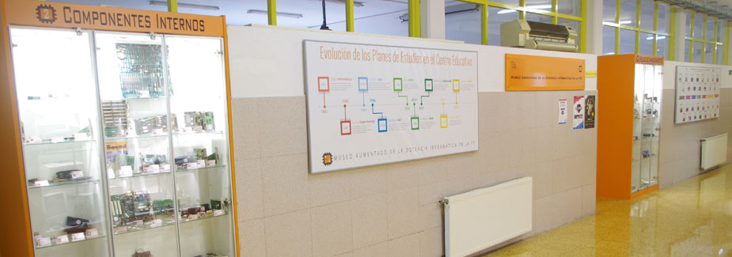
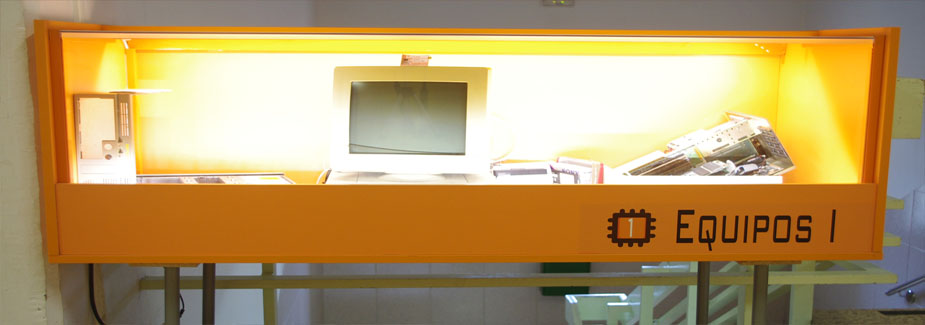
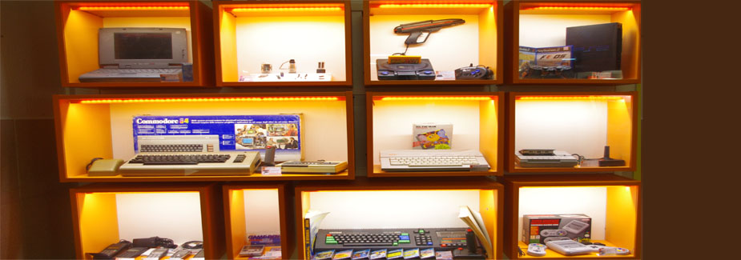

El "Museo Aumentado de la Docencia Informática en la FP", ofrece un recorrido a través de las cerca de 4 décadas de la historia de la docencia Informática en Cantabria. Cuenta con cientos de objetos que han sido utilizados en las aulas desde el curso académico 1982/83, cuando nuestro centro era el antiguo "Instituto Politécnico de Santander", el primer centro educativo en incorporar la que es hoy la especialidad de Informática y Comunicaciones.
Los fondos iniciales lo constituyen decenas de piezas relacionadas con la informática y utilizadas en las aulas. Posteriormente ha ido incrementado sus fondos gracias a donaciones y cesiones de particulares e instituciones públicas y privadas. Contiene Hardware como CPUs, periféricos, componentes, etc; Software como sistemas operativos, editores, ofimática, IDEs de desarrollo, etc; y todo tipo de Material Pedagógico Impreso.


Gracias a la Realidad Virtual y Aumentada, se añade información virtual a las piezas expuestas, creando además todo tipo de experiencias interactivas. Así la información sobre el mundo real alrededor del visitante se convierte en Digital e Interactiva. La información virtual sobre el entorno y los objetos, es almacenada y recuperada como una capa de información en la parte superior de la visión de las piezas reales.